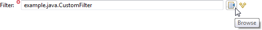
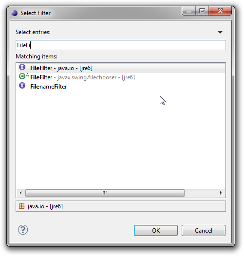
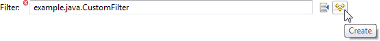

When implementing Eclipse tooling that works with Java projects, a frequent requirement is to deliver models and UI that reference Java types (classes, interfaces, enumerations and annotations). Implementing this from scratch, even using the excellent API provided by JDT is a challenge. Fortunately, Sapphire's JDT integration makes this quite easy.
The first step is the model.
@Type( base = JavaTypeName.class )
@Reference( target = JavaType.class )
@Label( standard = "filter" )
@JavaTypeConstraint( kind = { JavaTypeKind.CLASS, JavaTypeKind.INTERFACE }, type = "java.io.FileFilter" )
@MustExist
@Required
ValueProperty PROP_FILTER = new ValueProperty( TYPE, "Filter" );
ReferenceValue<JavaTypeName,JavaType> getFilter();
void setFilter( String value );
void setFilter( JavaTypeName value );Here we utilize reference value construct which states that the property holds a JavaTypeName which is resolvable to a JavaType. The resolution is provided by the framework and works as long as the model is loaded in the context of a Java project.
The @JavaTypeConstraint annotation specifies that the referenced type must be a class or an interface and that it must derive from java.io.FileFilter type.
The @MustExist annotation specifies that the named type must be present in the project.
The @Required annotation specifies that the property must have a value (null is not ok).
The next step is the UI definition. Here we create an editor section with a single property editor, but the property editor is, of course, not limited to editor sections. It can be used in any form context.
<section>
<content>
<property-editor>Filter</property-editor>
</content>
</section>That is all that is necessary to define a model property that references a Java type and to present that property in the UI. Once this example is executed, you will see a property editor that is composed of a label, a text box, two action buttons and a validation feedback marker.
Clicking on the validation feedback marker shows the problem message along with wealth of semantic information about the property.
The browse button provides the means to select from among existing Java types using JDT's type selection dialog. The framework automatically constraints the contents of the dialog based on @JavaTypeConstraint annotation.


The create button provides the means to define a new Java type if the specified type name cannot be resolved.

Since @JavaTypeConstraint annotation in this example specifies that the property can reference either a class or an interface, the user is presented with a choice after clicking on the create button.

Once the appropriate option is selected, the new type is created and opened in the Java editor. The created type derives from the type specified in @JavaTypeConstraint annotation and is formatted according to user's format preferences.